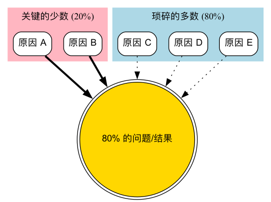

帕累托分析¶
在我们的工作和生活中，常常会遇到一种普遍而深刻的模式：少数的关键原因，导致了绝大多数的结果。例如，公司80%的利润可能来自20%的客户；软件80%的崩溃是由20%的Bug引起的；我们80%的烦恼，源于20%的事情。帕累托分析（Pareto 分析），正是基于这一“80/20法则”，旨在帮助我们从众多影响因素中，识别出那些起决定性作用的“关键少数（Vital Few）”，从而将有限的时间、精力和资源，集中投入到能产生最大效益的地方。
帕累托分析不仅是一种数据分析技术，更是一种高效的决策和管理哲学。它由管理学大师约瑟夫·朱兰（Joseph Juran）提出，并以意大利经济学家维尔弗雷多·帕累托（Vilfredo Pareto）的名字命名，后者在19世纪发现了意大利80%的土地掌握在20%的人手中。帕累托分析的核心工具是帕累托图（Pareto Chart），它通过一个独特的条形图和折线图的组合，将问题的各个原因按其重要性（通常是频率或成本）从高到低进行排序，让我们能够一目了然地识别出哪些是主要矛盾。
帕累托图的构成¶
帕累托图是一种特殊的图表，它巧妙地结合了两种图形元素，以传递丰富的信息。
-
条形图（Bar Chart）：
- X轴代表导致问题的不同原因类别（例如，客户投诉的不同类型）。
- 条形按照从左到右的顺序，按其影响程度（如出现的频次、造成的成本）从高到低排列。
- 左侧的Y轴代表每个原因类别的具体数值（如频次）。
-
折线图（Line Graph）：
- 这条线被称为累积百分比曲线。
- 它显示了从左到右，各个原因类别累积起来所占的总影响的百分比。
- 右侧的Y轴代表从0%到100%的累积百分比。
通过观察这张图，我们可以迅速定位到累积百分比曲线上升最陡峭的区域，其对应的条形，就是我们需要优先关注的“关键少数”。
帕累托图示例¶
假设一家餐厅分析了上个月客户投诉的所有原因：

-->
- 分析：从这张（假设的）图中，餐厅经理可以清晰地看到，“上菜太慢”和“菜品味道”这两个原因，可能就占到了全部投诉的75%。因此，与其分散精力去解决所有问题，他们应该集中资源，优先优化后厨的出餐流程和菜品研发流程。
如何进行一次帕累托分析¶
-
第一步：确定要分析的问题和原因分类
明确你想要解决的核心问题是什么（例如，“减少产品缺陷”），并确定用于归类的原因类别（例如，缺陷的类型：划痕、功能失灵、配件缺失等）。
-
第二步：收集数据并确定测量单位
在一定时期内，系统地收集关于每个原因类别出现情况的数据。你需要确定一个统一的测量单位，最常用的是频次（出现的次数），但在某些情况下，成本（每个原因造成的经济损失）可能是一个更具洞察力的单位。
-
第三步：整理数据并排序
将所有原因类别按照你选择的测量单位（如频次），从高到低进行排序。然后，计算每个类别的百分比，以及从高到低的累积百分比。
-
第四步：绘制帕累托图
- 创建一个组合图表。
- 绘制条形图，X轴为原因类别，左侧Y轴为频次，并按排序后的顺序绘制条形。
- 绘制折线图，在每个条形的顶端中心点上，标记出该点对应的累积百分比，然后将这些点连接起来，形成累积曲线。右侧Y轴标示0%到100%。
-
第五步：分析图表并确定行动焦点
分析帕累托图，找出那些构成了大约80%问题的“关键少数”原因。这些就是你下一步需要集中精力去进行根本原因分析（例如，使用“5 Whys”或“鱼骨图”）和解决的重点对象。
应用案例¶
案例一：软件开发中的Bug管理
- 问题：一个软件产品在上线后收到了大量的用户Bug反馈。
- 应用：开发团队将所有Bug按照其模块（如“用户登录模块”、“支付模块”、“数据报表模块”等）进行分类，并统计每个模块下Bug的数量。通过绘制帕累托图，他们发现超过70%的Bug都集中在“数据报表模块”。这个发现使得团队能够集中测试和开发资源，优先重构和修复这个最不稳定的模块，从而高效地提升了整个产品的质量。
案例二：个人时间管理
- 问题：一个人感觉自己每天都很忙，但效率低下，不知道时间都去哪了。
- 应用：他花了一周时间，记录下自己每天所有的时间开销，并将其归类（如“写代码”、“开会”、“刷社交媒体”、“处理邮件”等）。绘制帕累托图后，他震惊地发现，有近60%的工作时间，被“无效的会议”和“频繁地查看社交媒体”这两项活动所占据。这个分析让他下定决心，开始筛选性地参加会议，并使用番茄工作法来减少干扰，从而将更多时间投入到真正重要的工作上。
案例三：库存管理优化
- 问题：一家零售商希望降低其库存管理成本。
- 应用：他们对仓库中所有产品的年销售额进行了分析，并绘制了帕累托图。这就是所谓的ABC分类法。他们发现，A类产品（约占全部产品种类的20%）贡献了约80%的销售额。基于此，他们制定了差异化的库存管理策略：对A类产品进行最严格的库存监控和需求预测，确保永不断货；而对销售额极低的C类产品，则可以采用更宽松的管理策略，甚至考虑下架。
帕累托分析的优势与挑战¶
核心优势
- 聚焦重点：最核心的优势在于，它能帮助我们从纷繁复杂的问题中，快速识别出最重要的驱动因素，避免资源的分散和浪费。
- 决策的有力依据：提供了一个清晰、可视化的数据证据，来支持“我们应该优先做什么”的决策，易于在团队中达成共识。
- 通用性强：可以应用于质量管理、项目管理、时间管理、销售分析等几乎所有领域。
潜在挑战
- 只看历史，不看未来：帕累托分析是基于历史数据进行的，它不能预测未来可能出现的新问题。
- 定性因素的忽略：它主要关注可以被量化的因素（如频次、成本）。对于一些虽然出现频次低，但影响极其严重的问题（例如，一次罕见但致命的安全事故），帕累托分析可能会低估其重要性。
- 原因分析的缺失：帕累托分析只能告诉你“什么”是主要问题，但不能告诉你“为什么”会产生这些问题。它是一个识别问题的工具，而非解决问题的工具。
延伸与关联¶
- 根本原因分析（Root Cause 分析）：在通过帕累托分析识别出“关键少数”问题后，下一步通常就是运用鱼骨图或5 Whys等工具，对这些关键问题进行深入的根本原因分析。
- 质量管理：帕累托分析是全面质量管理（TQM）和六西格玛（Six Sigma）等质量管理体系中一个基础且核心的工具。
来源参考：帕累托分析作为质量管理的七大基本工具之一，其思想和应用在项目管理知识体系（PMBOK）和各类质量管理、运营管理的教科书中都有详细的阐述。约瑟夫·朱兰（Joseph Juran）的《质量控制手册》（Quality Control Handbook）对该原则在管理领域的应用有开创性的贡献。